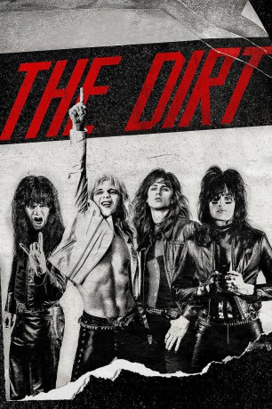

#10912 The Dirt - Sie wollten Sex, Drugs & Rock'n'Roll
Alternativ: The Dirt (Englischer Titel)
 
 IMDB-Wertung: 7.0 / 10
IMDB-Wertung: 7.0 / 10  Metascore: 39
Metascore: 39 
Biopic über die 80er-Glam-Metal-Band Mötley Crüe, bestehend aus dem Bassisten Nikki Sixx (Douglas Booth), dem Drummer Tommy Lee (Machine Gun Kelly), dem Gitarristen Mick Mars (Iwan Rheon) und dem Sänger Vince Neil (Daniel Webber). Die Musiker wurden nicht nur durch Hard-Rock-Hits wie „Kickstart My Heart“ bekannt, sondern vor allem auch wegen ihrer Eskapaden hinter der Bühne. Drogenexzesse, Sexorgien, Verkehrsunfälle und Liebschaften mit Playmates machten Mötley Crüe berühmt-berüchtigt. Kaum eine andere Band lebte den Rock-’n’-Roll-Lebensstil so sehr wie die vier Jungs. Mit ihrer in den Songs vermittelten Leidenschaft für Whsikey, Strip-Clups und Motorräder drückten sie der Musikwelt ihren Stempel auf, doch zwischen den hedonistischen Höhenflügen musste Mötley Crüe auch einige Schicksalsschläge verkraften.
Jahr: 2019
Dauer: 108 Minuten
FSK:
Land: USA Studio: NetflixTonspuren: DD5.1 - , - , - ,
Untertitel: Deutsch, Englisch,
Auflösung: 1080p (1920x1080) Größe: 4741 MB
Genre: Drama, Musik, Komödie, Biographie
Regisseur: Jeff Tremaine
Drehbuch: Amanda Adelson, Tommy Lee, Mick Mars, Vince Neil, Nikki Sixx
Soundtrack: Paul Haslinger
Darsteller:
 Machine Gun Kelly als Tommy Lee
Machine Gun Kelly als Tommy Lee- Erin Ownbey als Excited Partygoer
 Douglas Booth als Nikki Sixx
Douglas Booth als Nikki Sixx Aaron Jay Rome als Kayla's Boyfriend
Aaron Jay Rome als Kayla's Boyfriend Daniel Webber als Vince Neil
Daniel Webber als Vince Neil- Alyssa Marie Stilwell als Kayla
- Brittany Furlan als Biker Chick
 Iwan Rheon als Mick Mars
Iwan Rheon als Mick Mars- Trace Masters als Frank Feranna, Jr., Age 8
- Matthew Underwood als Gino
 Kathryn Morris als Deana
Kathryn Morris als Deana- Vince Mattis als Frank Feranna, Jr.
 Mark Ashworth als Deana's Boyfriend
Mark Ashworth als Deana's Boyfriend Avis-Marie Barnes als Officer
Avis-Marie Barnes als Officer- Eleanor T. Threatt als County Clerk
 Joe Chrest als David
Joe Chrest als David- Elena Evangelo als Voula
- Courtney Dietz als Athena
- Kabby Borders als Tommy's Girlfriend
- Carol Ann Scruggs als Dottie
 Peter Jaymes Jr. als Rick
Peter Jaymes Jr. als Rick- Katherine Neff als Lovey
 David Kallaway als Starwood Bouncer
David Kallaway als Starwood Bouncer- Betsy Holt als Vince's Groupie
- Pete Davidson als Tom Zutaut
- Sylvia Grace Crim als Restaurant Groupie
- Lucius Falick als Drunk Dude
- Christian Gehring als David Lee Roth
 David Costabile als Doc McGhee
David Costabile als Doc McGhee- Alexanne Wagner als Tom Zutaut's Girlfriend
- Melanie Hebert als MTV VJ
 Tony Cavalero als Ozzy Osbourne
Tony Cavalero als Ozzy Osbourne Leven Rambin als Sharise
Leven Rambin als Sharise- Max Milner als Razzle
- Jordan Lane Price als Roxy
- Kristin Brock als Party Guest
- Rebekah Graf als Heather Locklear
 Joshua Mikel als Drug Dealer
Joshua Mikel als Drug Dealer- Blaine Kern III als Addict
 Martin Bats Bradford als Paramedic #1
Martin Bats Bradford als Paramedic #1 Anthony Marble als Paramedic #2
Anthony Marble als Paramedic #2- Kamryn Ragsdale als Skylar
- Michael Hodson als Randy Feranna
 Martin Covert als Stage Manager
Martin Covert als Stage Manager Sue-Lynn Ansari als Backstage Vixen (uncredited)
Sue-Lynn Ansari als Backstage Vixen (uncredited)- Kennedy Anthony als Denny's Daughter (uncredited)
- Katira Banks als Concert Patron (uncredited)
 Charles Barber als Motley Security (uncredited)
Charles Barber als Motley Security (uncredited)- Jana Bell als Hotel Mother (uncredited)
- Mary Cazes als Tropicana Stripper (uncredited)
Datei: X:\2019(A-F)\Dirt - Sie wollten Sex, Drugs & Rock'n'Roll, The (2019, FSK, 1920x1080).mkv seit 03.04.2019
Festplatte: HD 2018(G-Z)-2019(A-Z)
 Es gibt insgesamt 60 Filme in der Gruppe '2019(A-F)'
Es gibt insgesamt 60 Filme in der Gruppe '2019(A-F)'